Chapitres du Jeu
Voici la répartition des chapitres présents dans le jeu. Il en existe 6 principaux, avec des chemins et des fins alternatives. Les images que vous pouvez
voir sont des salles typiques de ces chapitres. Du chapitre 1 à 4, les différentes versions des niveaux sont réparties sur deux étages. À partir du
chapitre 4.5, les chapitres ne durent qu'un étage, d'où la réduction de diversité.
Chapitre 1
| 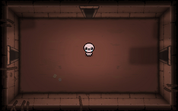 |
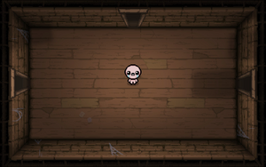 |
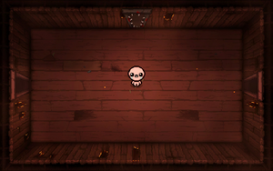 |
| Basement |
Cellar |
Burning Basement |
Chapitre 1.5 (Voie Alternative)
Chapitre 2
| 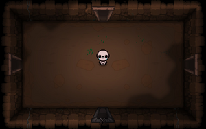 |
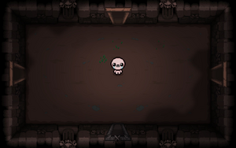 |
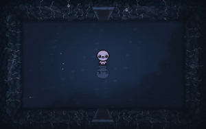 |
| Caves |
Catacombs |
Flooded Caves |
Chapitre 2.5 (Voie Alternative)
| 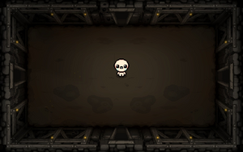 |
 |
| Ashpit |
Mines |
Chapitre 3
 |
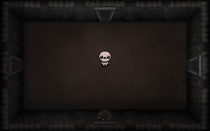 |
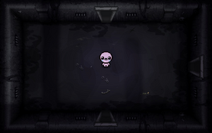 |
| Depths |
Necropolis |
Dank Depths |
Chapter 3.5 (Voie Alternative)
| 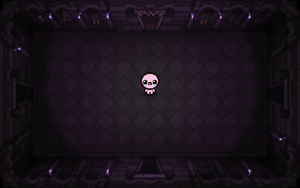 |
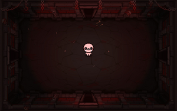 |
| Mausoleum |
Gehenna |
Chapitre 4
| 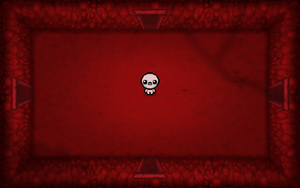 |
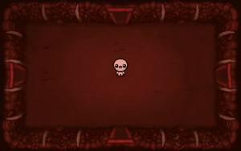 |
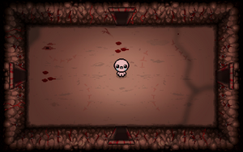 |
| Womb |
Utero |
Scarred Womb |
Chapitre 4.5 (Voie Alternative)
| 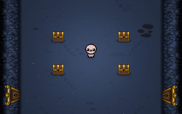 |
 |
| ??? (Blue Womb) |
Corpse |
Chapitre 5
| 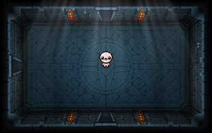 |
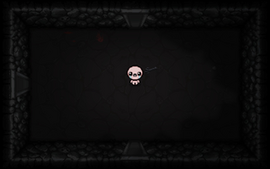 |
| Cathedral |
Sheol |
Chapitre 6 (Optionnel)
| 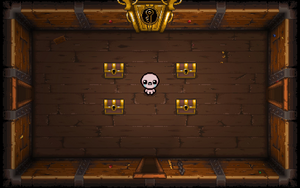 |
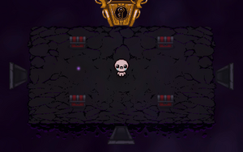 |
| Chest |
Dark Room |
Endgame (Optionnel)